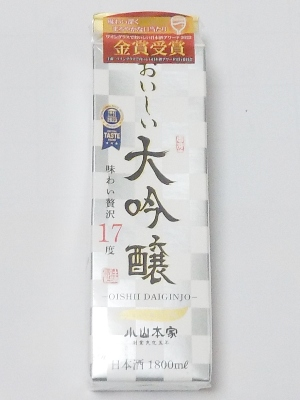
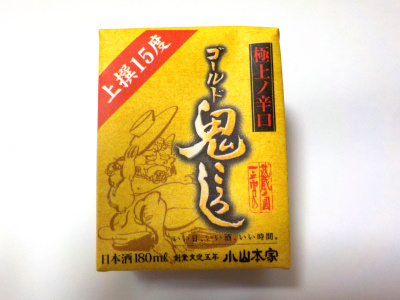

小山本家酒造のおいしい大吟醸はリーズナブルですね。
更新日 : 2025/12/27

紙パックで大容量の大吟醸が安いのはいいですね。値段の理由は醸造アルコールを使っているからかな。
フルーティーな甘さもあるし、アルコールのスッキリ感と尖った感もありました。
お求めやすいお酒と大吟醸の中間っぽいお酒だと思いました。それぞれの味がある分、複雑だったり味わい深かったりしますね。
私は普通の大吟醸は買えないので、これでいいかな。
埼玉県さいたま市西区大字指扇1798番地
更新日 : 2025/12/27

紙パックで大容量の大吟醸が安いのはいいですね。値段の理由は醸造アルコールを使っているからかな。
フルーティーな甘さもあるし、アルコールのスッキリ感と尖った感もありました。
お求めやすいお酒と大吟醸の中間っぽいお酒だと思いました。それぞれの味がある分、複雑だったり味わい深かったりしますね。
私は普通の大吟醸は買えないので、これでいいかな。
更新日 : 2022/09/27

ペッケージは黄色なんですが、なんとなくゴールドに見えます。それでもって高級そうな感じがします。
実際色々並んでいるお酒の中から、この商品が一番立派に見えたので買いました。ゴールドの威力って凄いです。
極上の辛口とか格上のキレって商品に書いてありますが、そんな感じの商品でした。辛口でキレがあるので、お米の感じはあまりなかったです。
ドライですね。